Gate Pass Management System
A purpose-built out-of-office management workflow connecting employee kiosk requests, supervisor decisions, HR acknowledgement and security movement tracking.

Main Employee Request Kiosk · Windows Application
The employee kiosk starts the Gate Pass workflow. Follow the actual application screens in order, from employee entry to final approval.
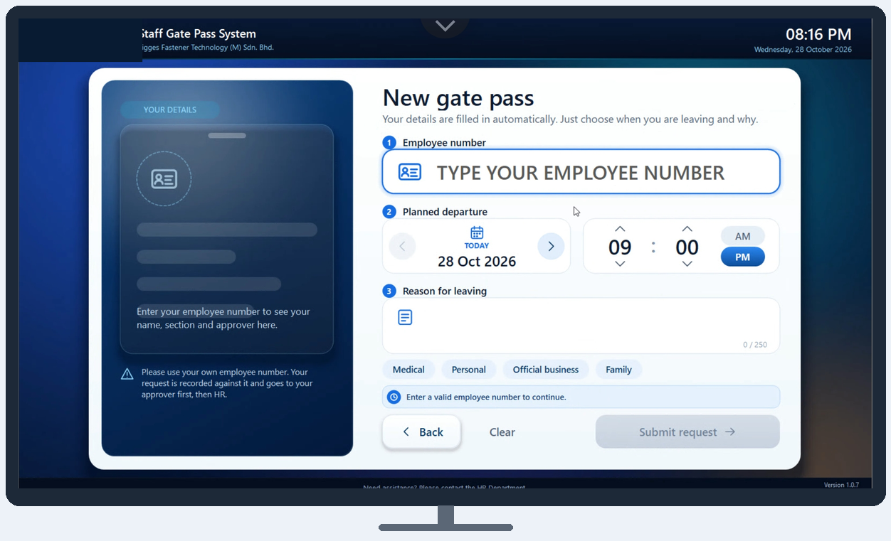
How a Gate Pass Request Works
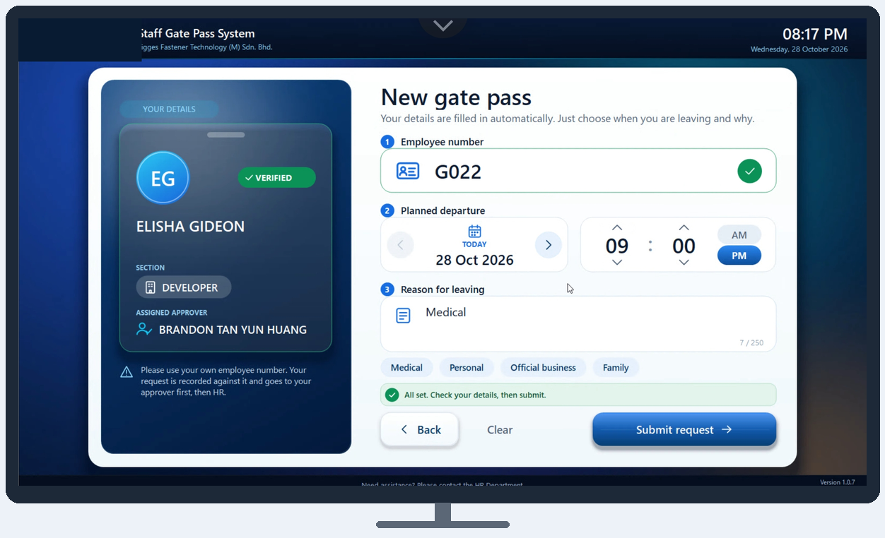
1 · Employee Identification & Request
The employee enters a staff number, confirms their details and submits the request.
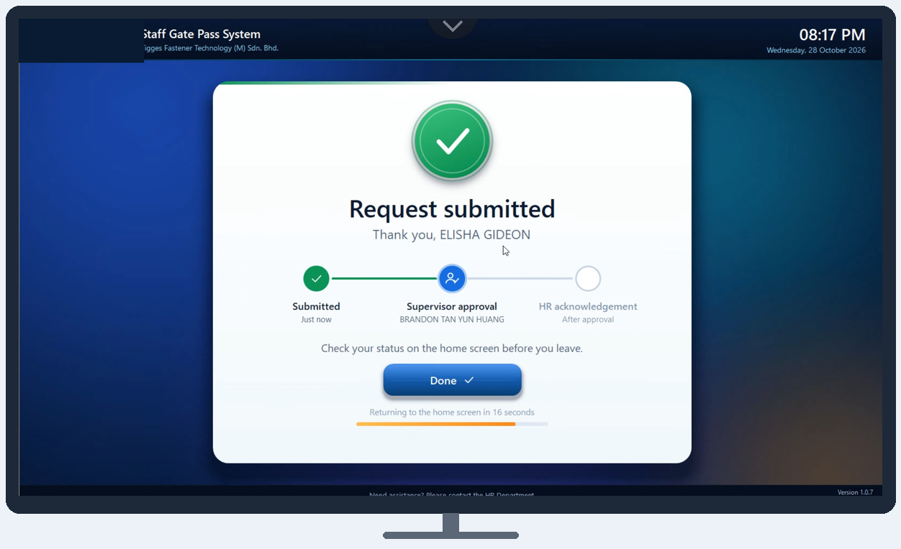
2 · Request Submitted
The kiosk confirms submission and shows that supervisor approval is pending.
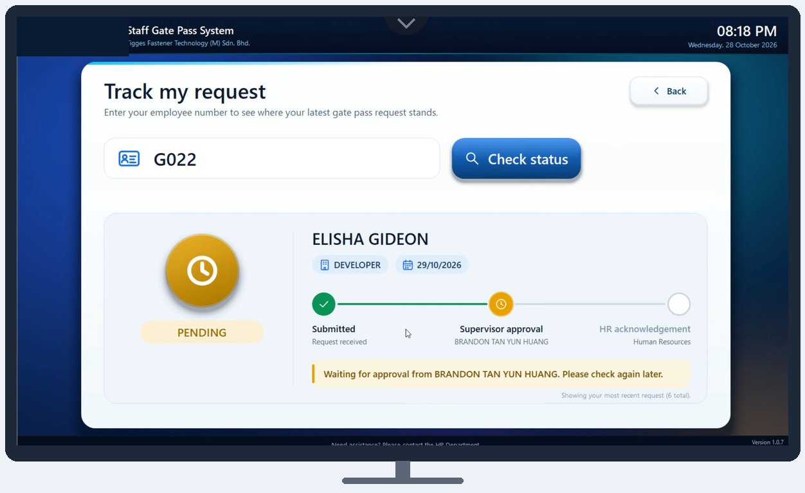
3 · Track Pending Request
The employee can check the pending approval status.
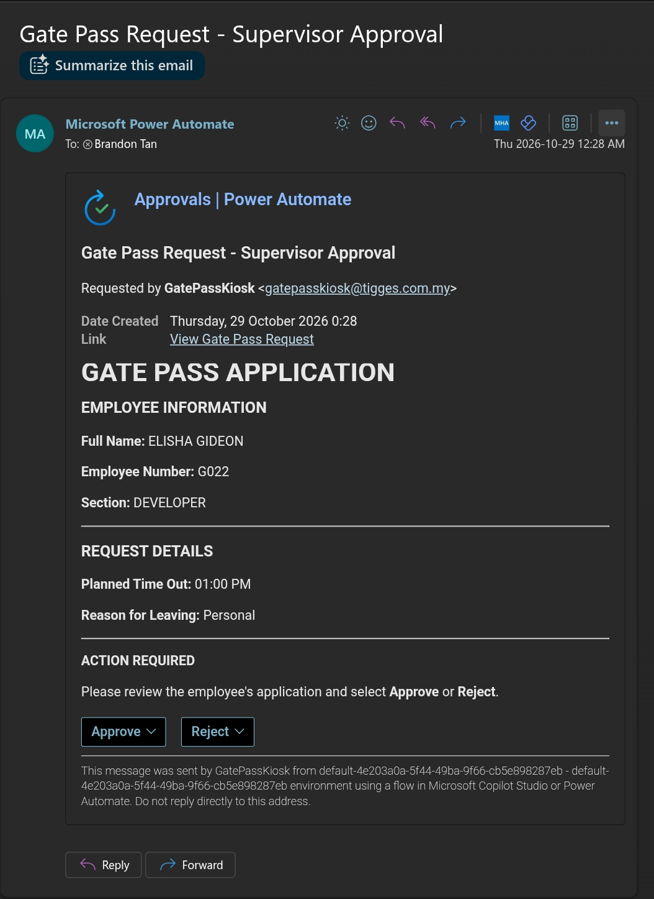
4 · Supervisor Approval
The assigned supervisor or manager receives the Outlook approval request.
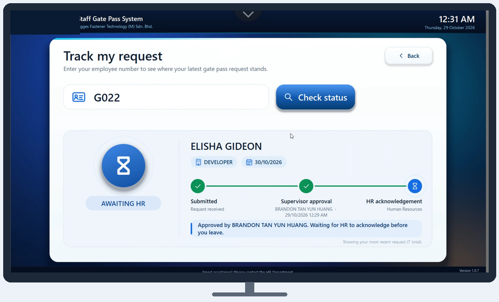
5 · Supervisor Approved · Awaiting HR
The kiosk shows the supervisor decision and the remaining HR acknowledgement.
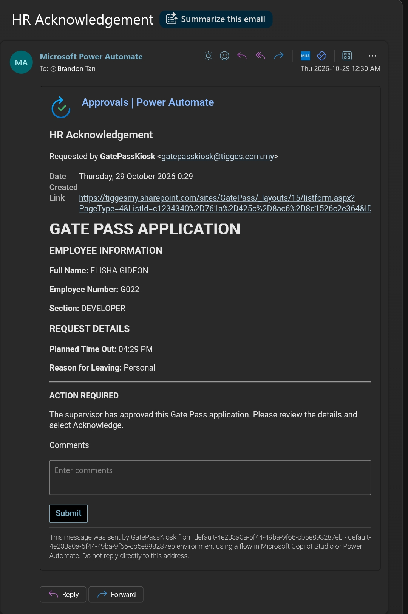
6 · HR Acknowledgement
HR receives the acknowledgement request through Outlook.
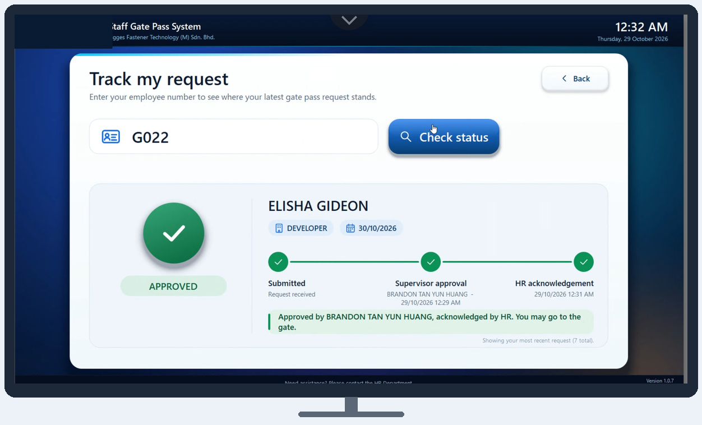
7 · Final Approved Status
The kiosk displays the completed approval status.
Admin Monitoring App · Actual Interface
The second part of the system is the Android admin monitoring application, providing authorized administrators with visibility into system status and employee movement records.

System Monitoring
Service diagnostics and connectivity checks.

Employee Lookup
Approved pass lookup and employee check-in and check-out workflow.
Security Guard Kiosk · Windows Application
The final application in the sequence is the Security Guard Windows kiosk. After approval and HR acknowledgement, security uses it to verify approved passes, record departures, and register returns. This application does not create requests.
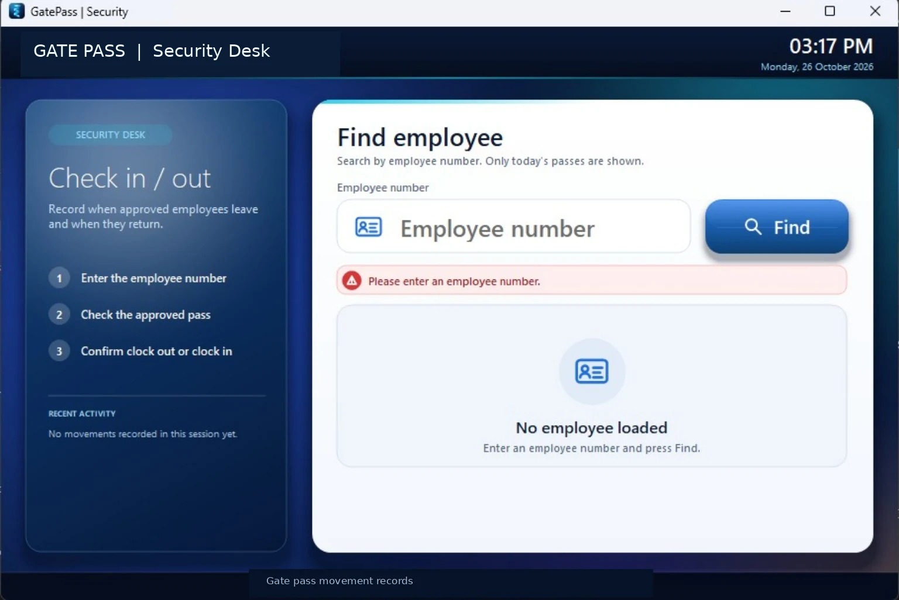
Employee Search
Find an approved Gate Pass using an employee number.
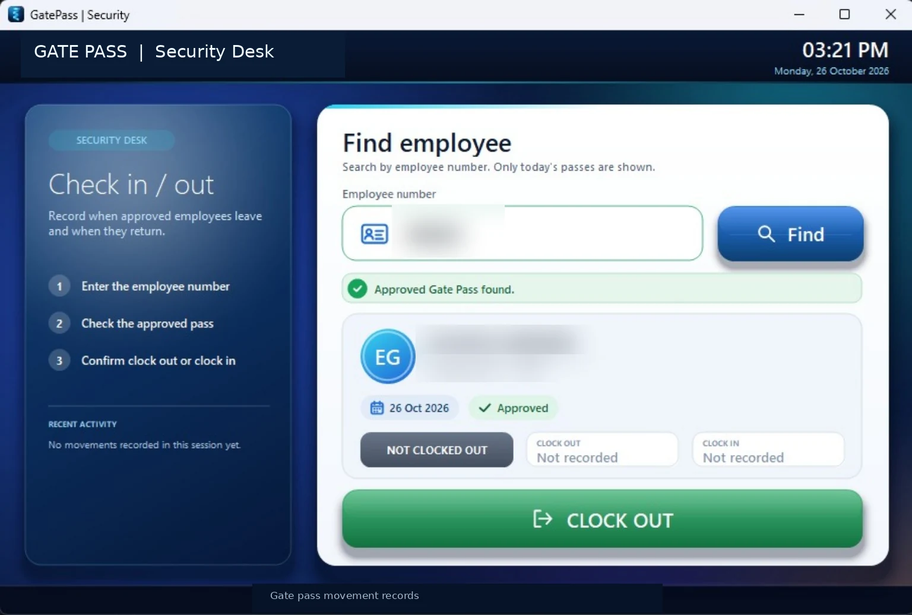
Approved Pass
Verify approval and record the employee's departure.
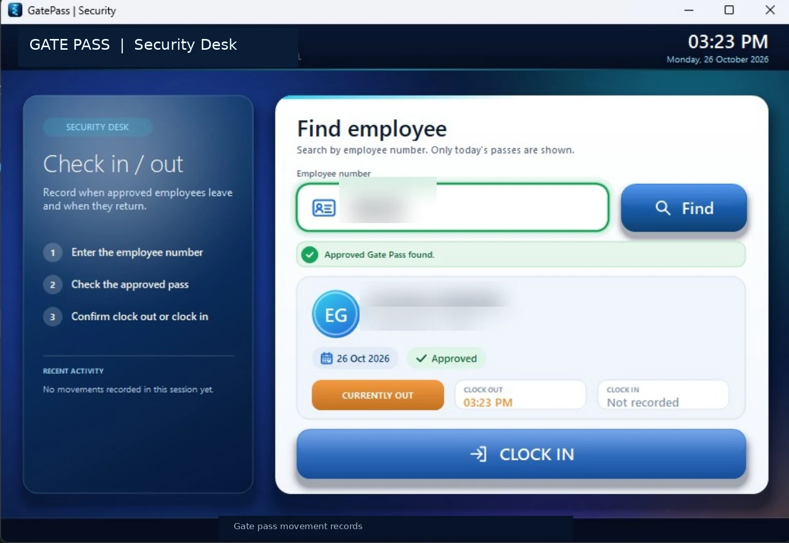
Employee Return
View the clock-out status and register the employee's return.
Connected System Architecture
These applications work together through supervisor approval, HR acknowledgement, SharePoint records, and security movement tracking.